| 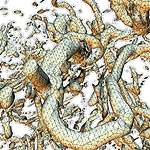 |
'Skeleton Climbing': fast isosurfaces with fewer triangles
,
,
and
,
|
Abstract
-
- Skeleton Climbing is an algorithm that builds triangulated isosurfaces in 3D grid data, more economically than Marching Cubes, and without the time penalty of current mesh decimation algorithms. Building the surface from its intersections with grid edges (1-skeleton), then faces (2-skeleton), then cubes (3-skeleton), treats the data in a uniform way; this allows a 25% reduction in the number of triangles produced, while still creating a true separating surface at similar speed.
Download Paper
- Acrobat:
sc.pdf (size: 2.64 MB)
Visual Comparison
The following table compares the statistical and visual results of the generated meshes.| Data Set | Marching Cubes | Skeleton Climbing w/o step 4 | Skeleton Climbing with step 4 |
| Knot | 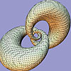 | 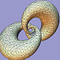 | |
| No of Triangles | 13,968 | 13,968 | 10,464 |
| Timing | 1.81 sec | 1.55 sec | 1.61 sec |
| CT skull | 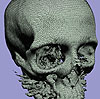 | 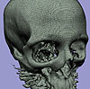 | 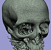 |
| No of Triangles | 592,368 | 595,802 | 446,990 |
| Timing | 62.02 sec | 63.38 sec | 60.60 sec |
| Arteries | 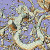 | 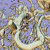 | 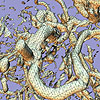 |
| No of Triangles | 263,438 | 265,536 | 195,588 |
| Timing | 55.82 sec | 59.80 sec | 63.15 sec |
| Mt. St Antonio | 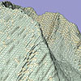 |

| 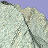 |
| No of Triangles | 268,252 | 268,368 | 201,686 |
| Timing | 113.77 sec | 92.91 sec | 96.33 sec |
{kind=link}
{kind=link}
{kind=link}
{kind=link}
{kind=link}
{kind=link}
{kind=link}
{kind=link}
{kind=link}
{kind=link}
{kind=link}